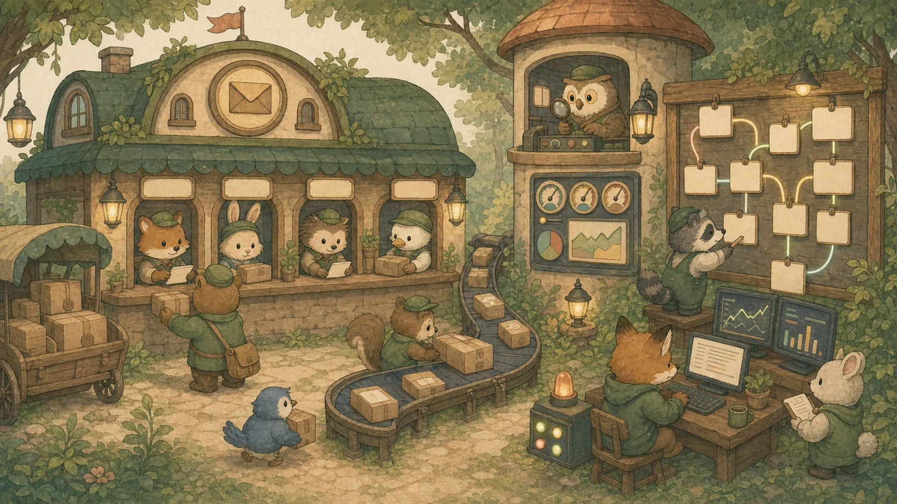
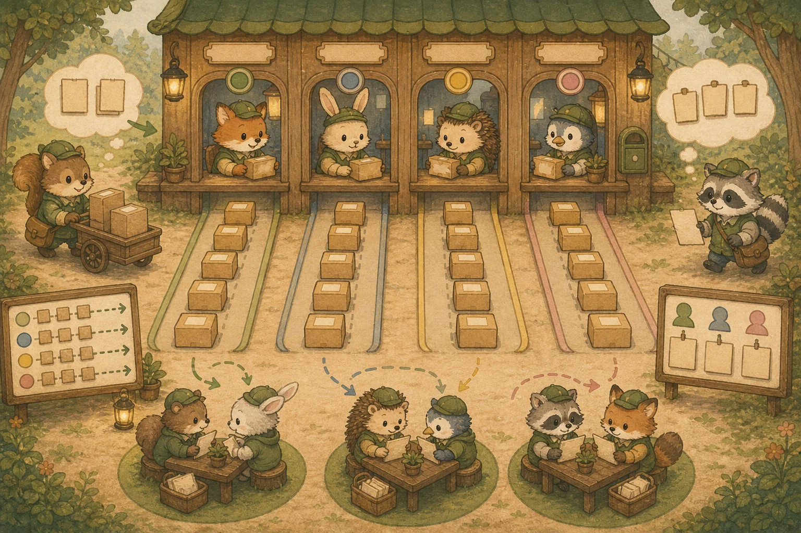
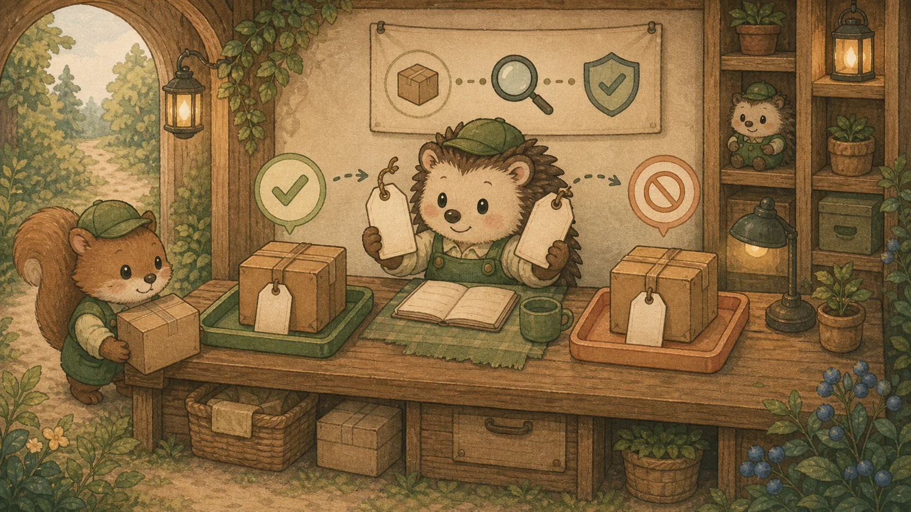
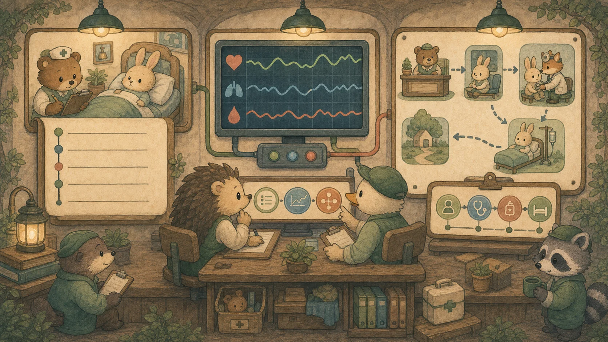
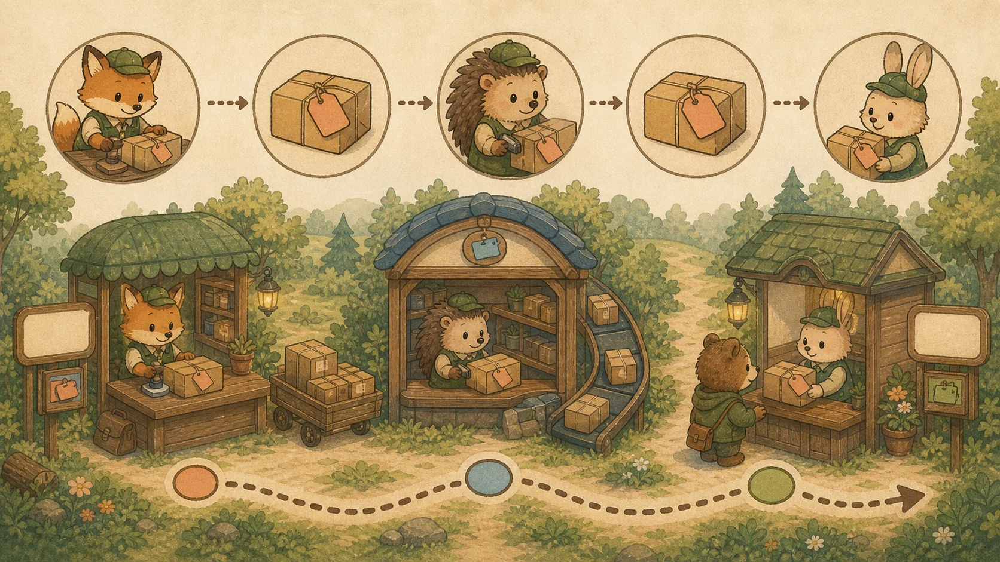

부록 G. 백엔드 운영 — 이벤트 메시징 & 관측성
국내 백엔드 공고의 최다 키워드 묶음이 바로 "MySQL · Redis · Kafka"와 "Prometheus · Grafana · 로그 수집"입니다. 이 부록은 Ch8(MSA·Saga)의 빠진 토대인 Kafka 메시징과, "로그 한 줄"에서 멈춰 있던 운영을 관측성(Observability)으로 확장합니다. 모든 예시는 가상 의류 쇼핑몰 Rehab Fashion의 "주문 생성 → 재고 차감·알림" 흐름으로 이어집니다. (쿠버네티스는 Ch8 Docker에 이어지는 보강 박스로 별도 제공 예정.)

🧭 이 부록 사용법
각 질문은 면접 답변 스크립트처럼 읽으세요. 비유로 큰 그림을 잡고 → 표/코드로 근거를 채우고 → 면접 꼬리 질문으로 한 단계 더 들어갑니다. 마지막 자가 진단 퀴즈를 풀면 대시보드 "오늘의 복습"에 자동 편입되어 간격 반복으로 굳습니다.
📨 A. Kafka & 이벤트 기반 아키텍처
Q1. Kafka의 토픽·파티션·오프셋·컨슈머 그룹 — 순서 보장은 어디까지?
Kafka는 "메시지를 지우지 않고 로그로 쌓아두는 분산 이벤트 스트리밍 플랫폼"입니다. 면접에선 용어 나열이 아니라 "순서 보장 범위"와 "파티션 수와 컨슈머 수의 관계"를 정확히 아는지를 봅니다.
💡 비유로 이해하기: 여러 창구로 나뉜 우체국
토픽은 "주문" 같은 주제별 우편함이고, 그 안은 처리량을 위해 여러 창구(파티션)로 나뉩니다. 각 창구의 편지엔 순번표(오프셋)가 붙어 한 창구 안에서는 순서가 보장됩니다. 같은 팀(컨슈머 그룹)의 직원들이 창구를 나눠 맡아 병렬 처리하되, 한 창구는 한 직원만 맡습니다.

순서 보장은 "파티션 안에서만". 토픽 전체의 전역 순서는 보장되지 않습니다. 그래서 "같은 주문의 이벤트는 순서대로"가 필요하면 orderId를 파티션 키로 주어 같은 주문이 항상 같은 파티션으로 가게 합니다(전역 순서가 꼭 필요하면 파티션 1개 → 병렬성 포기).
파티션 수 ↔ 컨슈머 수: 한 파티션은 그룹 내 한 컨슈머만 맡으므로, 컨슈머 수 ≤ 파티션 수가 병렬성의 상한입니다. 컨슈머가 파티션보다 많으면 남는 컨슈머는 놀게 됩니다.
💡 면접 꼬리 질문: "처리량을 높이려 파티션을 늘렸더니 순서가 깨졌습니다. 왜죠?" → 파티션이 늘면 키 없이 들어간 메시지가 여러 파티션에 흩어져 파티션 간 순서가 보장되지 않기 때문입니다. 순서가 중요한 단위(주문·사용자)를 파티션 키로 고정하면 처리량과 "단위 내 순서"를 함께 얻습니다.
Q2. 메시지 유실 없이 '정확히 한 번' 처리가 가능한가요?
분산 메시징의 단골 함정입니다. 결론부터: 완전한 exactly-once는 제약·비용이 크고, 현실 표준은 at-least-once + 멱등 컨슈머입니다.
💡 비유로 이해하기: 택배 재배송과 송장 번호
택배는 분실보다 중복 배송이 차라리 낫습니다(at-least-once). 대신 받는 쪽이 송장 번호로 "이미 받은 택배"를 알아채 한 번만 처리하면 됩니다 — 이것이 멱등 컨슈머입니다. 부록 E의 멱등성(Q4)과 정확히 같은 원리죠.

@KafkaListener(topics = "order-events", groupId = "inventory")
public void handle(OrderEvent event) {
// 이미 처리한 이벤트면 무시 (at-least-once 중복 방어 = 멱등성)
if (processedRepository.existsById(event.getEventId())) return;
inventoryService.decreaseStock(event.getProductId(), event.getQty());
processedRepository.save(new Processed(event.getEventId())); // 처리 기록
// 실패가 반복되면 재시도 후 DLQ(dead-letter-topic)로 격리해 본 흐름을 막지 않음
}실패 처리 — DLQ: 몇 번 재시도해도 계속 실패하는 메시지는 DLQ(Dead Letter Queue)라는 별도 토픽으로 보내 격리합니다. 본 처리 흐름이 한 건 때문에 막히는 것을 막고, 나중에 원인을 분석해 재처리합니다.
💡 면접 꼬리 질문: "RabbitMQ 대신 Kafka를 고르는 기준은?" → 대용량 스트리밍·이벤트 로그·재생(replay)이 필요하면 Kafka(메시지를 디스크에 보존, 오프셋을 되감아 다시 읽기 가능). 반대로 복잡한 라우팅·작업 큐·낮은 지연의 개별 메시지 처리가 핵심이면 RabbitMQ가 더 맞습니다.
🔭 B. 관측성 (Observability)
Q3. 장애가 났는데 로그만으론 원인을 못 찾습니다 — 무엇이 더 필요한가요?
운영 경험을 묻는 단골 질문입니다. 정답의 뼈대는 관측성의 3 기둥: 로그 · 메트릭 · 트레이스입니다. 로그는 "무슨 일이 있었나"의 점(point)일 뿐, 전체 추세(메트릭)와 요청의 경로(트레이스)가 있어야 원인을 좁힙니다.
💡 비유로 이해하기: 병원의 진료·모니터·동선
로그는 진료 기록 한 줄("14:03 통증 호소"), 메트릭은 심박·혈압을 시간에 따라 보여주는 모니터 그래프(추세·이상 감지), 트레이스는 환자가 접수→검사→처치를 거친 전체 동선입니다. 셋이 모여야 "언제·어디서·왜"가 보입니다.

Spring 진영의 메트릭 흐름은 Actuator(/actuator/health·/actuator/metrics로 상태 노출) → Micrometer(벤더 중립 계측 추상화) → Prometheus(수집·저장) → Grafana(대시보드 시각화)로 이어집니다.
// 채널별 주문 생성 수를 카운터로 — Prometheus가 수집, Grafana가 그래프로
meterRegistry.counter("orders.created", "channel", "web").increment();
// 결제 지연을 타이머로 — p95/p99 지연을 대시보드에서 추적
meterRegistry.timer("payment.latency").record(elapsed, TimeUnit.MILLISECONDS);💡 면접 꼬리 질문: "어떤 지표를 대시보드 최상단에 두겠어요?" → 요청 서비스라면 RED(Rate 트래픽 · Errors 에러율 · Duration p99 지연), 리소스 중심이면 USE(Utilization · Saturation · Errors)를 답합니다. "p99 지연·에러율·트래픽·포화도"를 핵심 골든 시그널로 꼽으면 됩니다.
Q4. 분산 환경에서 한 요청의 전체 경로를 어떻게 추적하나요?
MSA에선 주문 하나가 결제·재고·배송 여러 서비스를 거칩니다. "어디서 느려졌는지"를 찾으려면 한 요청을 관통하는 식별자가 필요합니다 — 분산 추적(Distributed Tracing)의 핵심인 Trace ID입니다.
💡 비유로 이해하기: 택배 운송장 번호
택배 운송장 번호 하나가 집화 → 허브 → 배송까지 따라다니며 각 단계 소요 시간을 보여주듯, 요청 진입 시 발급한 Trace ID가 서비스 호출마다 헤더로 전파되어 전체 경로를 하나로 묶습니다. 각 구간이 span입니다.

// 요청 진입 필터: traceparent 헤더가 있으면 잇고, 없으면 새로 발급
String traceId = resolveTraceId(request); // 예: W3C traceparent
MDC.put("traceId", traceId); // 모든 로그 줄에 traceId 자동 포함
log.info("결제 시작 orderId={}", orderId); // → {"traceId":"ab12..","msg":"결제 시작"}
// 다른 서비스 호출 시 헤더로 전파 → 결제·재고·배송 로그가 한 traceId로 연결
restClient.post().header("traceparent", traceParent)...;OpenTelemetry(OTel)는 벤더에 묶이지 않는 계측 표준입니다. Spring에선 Micrometer Tracing + OTel 조합으로 trace를 수집하고, 로그에 traceId를 넣어두면 "이 에러 로그 → 이 요청의 전체 경로"로 즉시 점프할 수 있습니다.
운영의 마지막 조각은 알림입니다. SLO(서비스 수준 목표, 예: 가용성 99.9%)를 정하고, 에러레이트·지연이 목표를 위협하면(에러 버짓 소진) 알립니다 — 사람이 그래프를 계속 쳐다보지 않아도 되게.
💡 면접 꼬리 질문: "한 주문이 결제·재고·배송을 거쳤는데 응답이 느립니다. 어떻게 병목을 찾나요?" → 분산 추적에서 그 요청의 trace를 열어 span별 소요 시간을 보고 가장 오래 걸린 서비스를 특정합니다. 그 서비스의 메트릭(지연·에러)과 그 시점 로그(같은 traceId)를 교차 확인해 원인까지 좁힙니다.
🔗 이어보기: 이벤트로 분리한 주문/재고의 분산 트랜잭션은 Ch8 Saga로, 중복 방어 원리는 부록 E 멱등성으로 연결됩니다. 컨테이너 오케스트레이션(Kubernetes: Pod·Deployment·Service·ConfigMap/Secret·헬스체크·롤링 업데이트)은 Ch8 Docker에 이어지는 보강 박스로 따로 다룹니다.
🎤 모의 면접 — 백엔드 운영
실제 면접처럼 꼬리에 꼬리를 무는 흐름입니다. 면접관 질문 → 답변 뼈대 → 이어지는 꼬리 질문 순으로, 소리 내어 답해 보세요.
🗣️ "주문 이벤트를 Kafka로 처리합니다. '정확히 한 번' 처리를 보장할 수 있나요?"
답변 뼈대: 완전한 exactly-once는 제약·비용이 큽니다. 현실 표준은 at-least-once + 멱등 컨슈머(처리한 이벤트 ID를 기록해 중복 무시). 반복 실패 메시지는 재시도 후 DLQ로 격리.
↪️ 꼬리: "특정 주문의 이벤트 순서 보장은?" → orderId를 파티션 키로 주어 같은 주문이 같은 파티션으로(파티션 내 순서 보장).
🗣️ "장애가 났는데 로그만으론 원인을 못 찾습니다. 무엇이 더 필요하죠?"
답변 뼈대: 관측성의 3 기둥 — 로그(사건 상세) 외에 메트릭(추세·이상)과 분산 트레이스(요청 경로)가 함께 있어야 합니다. 스택: Actuator → Micrometer → Prometheus → Grafana, 로그는 구조적으로 Loki/ELK.
↪️ 꼬리: "대시보드 최상단에 둘 지표는?" → RED(트래픽·에러율·p99 지연) 또는 USE(사용률·포화도·에러).
🗣️ "MSA에서 한 주문이 결제·재고·배송을 거치는데 응답이 느립니다. 병목을 어떻게 찾나요?"
답변 뼈대: 분산 추적에서 그 요청의 trace를 열어 span별 소요 시간으로 가장 오래 걸린 서비스를 특정 → 그 서비스의 메트릭(지연·에러)과 같은 traceId 로그를 교차 확인해 원인까지 좁힙니다.
↪️ 꼬리: "서비스 간 traceId는 어떻게 이어지나요?" → 진입 시 발급, 헤더(W3C traceparent)로 전파, 로그 MDC에 넣어 상관.